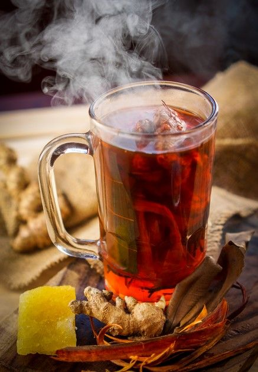

Selamat Datang
Wedang Runtah adalah minuman tradisional khas Tegal yang kaya akan rempah dan manfaat bagi kesehatan.
Tentang Wedang Runtah
Wedang runtah adalah minuman rempah hangat khas Tegal yang terdiri dari campuran beberapa bahan rempah dan pemanis alami, direbus bersama sehingga menghasilkan minuman beraroma kuat, hangat, dan menenangkan. Kata wedang berarti minuman hangat; istilah runtah di sini mengacu pada “campuran” atau sisa-sisa rempah yang masih berguna — bukan bermakna kotor — sehingga esensi minuman ini adalah kombinasi rempah yang saling melengkapi rasa dan aroma.
.
Selain unik, ternyata minuman runtah atau uwuh ini mempunyai banyak khasiat juga lho:
Mengatasi asam urat, Menurut sejumlah penelitian, jahe merah yang terdapat pada wedang uwuh mampu menurunkan kadar asam urat dalam darah. Selain itu, jahe merah juga bisa menurunkan rasa nyeri akibat penghambatan pada jalur siklooksigenase
Menangkal radikal bebas, Menurut sebuah penelitian yang diterbitkan dalam Journal of Agriculture and Food Chemistry, serai memiliki kandungan antioksidan yang bisa mencegah radikal bebas. Antioksidan pada serai juga berperan penting untuk mencegah berbagai penyakit, seperti disfungsi sel di dalam arteri koroner.
Meningkatkan kekebalan tubuh, kapulaga pada wedang uwuh mampu melawan bakteri dan patogen lainnya yang mampu membuat tubuh menjadi lebih sehat dan kuat. Selain itu, wedang uwuh juga dapat mengeluarkan racun dalam tubuh. Kandungan antioksidan pada pala, mampu mencegah dan mengobati penyakit hati dan batu ginjal.
Mengobati batuk dan pilek, Gula batu dianggap mampu membantu menenangkan rongga mulut, meluruhkan lendir, dan mengurangi batuk. Selain itu, kandungan minyak atsiri dalam jahe merah juga bermanfaat untuk mengatasi batuk pada anak-anak maupun orang dewasa. Manfaat wedang uwuh ini bisa didapatkan dengan cara mengkonsumsinya secara rutin dan teratur.
Sejarah Wedang Runtah
1. Asal-usul dari Tradisi Masyarakat Tegal
Wedang runtah berasal dari daerah Tegal, Jawa Tengah, dan sudah dikenal sejak zaman dahulu sebagai minuman tradisional rumahan.
Kata wedang dalam bahasa Jawa berarti minuman hangat, sedangkan runtah berarti sisa atau campuran berbagai bahan yang tersisa.
Pada awalnya, wedang runtah muncul dari kebiasaan masyarakat pedesaan Tegal yang hemat dan bijak dalam memanfaatkan bahan dapur, terutama rempah-rempah. Saat membuat wedang jahe, wedang uwuh, atau minuman herbal lainnya, sering kali masih tersisa potongan kecil rempah seperti jahe, serai, kayu manis, atau cengkih. Daripada dibuang, sisa rempah itu dikumpulkan dan direbus kembali untuk menghasilkan minuman baru yang tetap beraroma wangi dan bermanfaat.
Dari kebiasaan itulah muncul istilah “wedang runtah”, yang secara harfiah berarti minuman hangat dari campuran sisa rempah. Walaupun disebut “runtah”, minuman ini tidak kotor atau berasal dari bahan bekas, melainkan dari potongan rempah yang masih baik dan masih mengandung aroma serta rasa kuat.
2. Perkembangan di Masyarakat
Seiring waktu, wedang runtah menjadi minuman khas yang disukai banyak orang di Tegal dan sekitarnya.
Awalnya hanya disajikan di rumah-rumah sebagai penghangat tubuh saat malam hari atau musim hujan. Namun kemudian, warung-warung tradisional dan pedagang kaki lima mulai menjual wedang runtah sebagai minuman khas daerah.
Rasa hangat dan aromanya yang khas membuat wedang runtah digemari oleh berbagai kalangan — dari masyarakat pedesaan hingga perkotaan. Banyak orang menikmati minuman ini sambil berbincang santai, terutama saat cuaca dingin atau hujan.
3. Filosofi dan Nilai Budaya
Wedang runtah tidak hanya sekadar minuman, tetapi juga mengandung nilai filosofi dan kearifan lokal masyarakat Tegal.
Konsep runtah mencerminkan sikap hidup hemat, bijak, dan tidak membuang yang masih berguna. Dalam budaya Jawa, hal ini mencerminkan pepatah “ora ono sing mubazir” yang berarti “tidak ada yang terbuang percuma.”
Jadi, wedang runtah menggambarkan karakter masyarakat yang kreatif, sederhana, dan menghargai alam, karena mampu memanfaatkan sisa bahan menjadi sesuatu yang bermanfaat dan bernilai.

Lokasi Wedang Runtah
Ingin merasakan sensasi hangat, manis, dan nikmat khas Wedang Runtah asli Tegal?
Yuk, datang langsung ke tempatnya üåø‚ú®
disini kamu bisa:
Melihat langsung proses pembuatan Wedang Runtah alami dari bahan-bahan pilihan.
Menikmati wedang segar yang baru diseduh
üìçAlamat Lengkap
Jl. HOS. Cokro Aminoto, Slawi, Slawi Wetan, Kec. Slawi, Kabupaten Tegal, Jawa Tengah 52411
üìç Buka di Google Maps